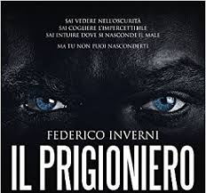
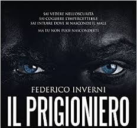

A TU PER TU CON L'AUTORE
INTERVISTA A FEDERICO INVERNI
autore del libro "IL PRIGIONIERO DELLA NOTTE"

INTERVISTA A FEDERICO INVERNI
autore del libro "IL PRIGIONIERO DELLA NOTTE"

1) Perché proprio in questo momento della sua vita ha deciso di scrivere "Il prigioniero della notte"?
In realtà lo spunto da cui è nato il libro si agitava dentro la mia mente da un bel po', forse da anni. La mia curiosità per tutto ciò che riguarda la memoria forse è nata quando ho visto al cinema Memento, il film di Nolan. O forse è nata da prima, da una serie di eventi che mi sono capitati. Non saprei! Sta di fatto che a un certo punto, un'estate, tutto ciò che avevo letto, studiato, osservato si è come coagulato attorno al personaggio di Lucas, e da lì, quasi fosse una sorta di golem, è nato il romanzo.
2) La scelta dei personaggi Anna e Lucas è stata casuale o è legata a un ricordo personale?
Lucas è stato il primo personaggio: sapevo che doveva essere un detective, conoscevo bene i labirinti della su amente, sapevo come metterlo in scena e cosa fargli fare... Ma non sapevo come raccontare tutto ciò. Per trovare il modo migliore di raccontare Lucas, alla fine ho capito che Lucas aveva bisogno di un contraltare, una voce da contrappunto. Ed è così che è nata Anna... E Anna a un certo punto ha preso il sopravvento. Ha voluto parlare in prima persona, si è impossessata della scena e ha fatto in modo che anche Lucas trovasse il suo asse narrativo.
3) Se il suo libro dovesse diventare un film quale regista nome e attori vorrebbe ?
Se dovesse mai diventare un film probabilmente non lo vedrei mai, mi verrebbe un colpo ben prima! Non so chi vorrei... Anzi, so che nel gruppo c'è chi ha già lettto Il prigioniero della notte (grazie davvero!). Chi ci vedreste? Mi piacerebbe molto capire come i lettori e le lettrici visualizzano i personaggi...
4) Cosa pensa del thriller nordico, ha letto qualcosa, conosce autori?
La crime fiction scandinava ha vissuto e vive grandi stagioni tutt'ora. Paradossalmente, non ho affatto amato Stieg Larsson, mentre mi piace molto Jo Nesbo, Lars Kepler e trovo interessante e bravo Samuel Bjork.
5) Internet ha trasformato i classici circoli letterari in enormi piazze in cui migliaia di persone possono scambiarsi consigli,commenti,recensioni su libri... Rischi e vantaggi di questo o cosa ne pensa...?
Internet rappresenta, come un po' tutte le cose, sia un'opportunità sia un rischio. Finché serve alla diffusione della cultura e della lettura, e a condividere le proprie passioni, trovo che sia eccezionale, potente, una risorsa ormai imprescindibile. Ma, proprio come appunto tutte le cose, l'importante è usare lo strumento e non esserne usati. Non lasciare, cioè, che la propria personalità on line si deformi. Amo le persone che hanno idee decise, ma che sanno esprimerle con educazione e democraticità.
6) Quale libro consiglierebbe per iniziare un viaggio fuori e dentro di sé, nel proprio io...
Non posso consigliarlo, perché sono un forte sostenitore della teoria secondo cui il libro è un destino. In altri termini, c'è sempre un libro giusto sulla strada di un lettore, e sarà quel libro e non un altro a trasformarlo, a renderlo un lettore appassionato e intelligente. L'incontro di un lettore con questo libro trasmutativo è qualcosa di eccezionale e per certi versi insondabile. Posso soltanto augurare che accada a tutti!
Federico Inverni